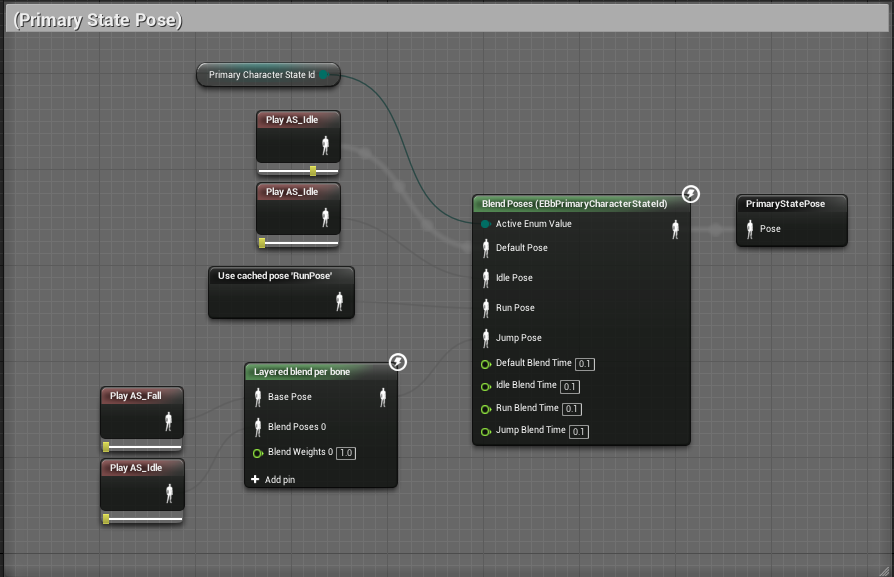

The Project
This is a solo university project I worked on during year 4. I am using Unreal Engine 4 and C++ to implement a brawler-style multiplayer game.
Please note that the game is still in a very early stage.
The Network
In my game, one of the players will be the listen server while the others are clients. I have created a Network class which will manage everything related to sessions. I have split the logic that is situation dependant into another abstract class called a NetworkEventSequence. For finding a match I inherit from that class and called the new class MatchFinder. This class will run the following network sequence: Find sessions -> Make an x amount of attempts to join the session -> If fails -> Try next session until last session. When no sessions are found, a new one will be created and can be joined by other players. The matchfinder class will use the methods in the network class to create this sequence. I split this functionality up because I imagined I would need other ways of joining sessions in the future (e.g. directly from a friend's list). To recap: the Network contains very generic helper methods and the different network event sequences determine how these methods are called.
Example of a Network method:
void UBbNetwork::FindSessions()
{
check(NetworkEventSequence);
IncrementPendingOperations();
/* Bind find sessions delegate and FindSessions */
IOnlineSubsystem* Sub = IOnlineSubsystem::Get();
if(Sub)
{
auto Sessions = Sub->GetSessionInterface();
if(Sessions.IsValid())
{
OnFindSessionsCompleteDelegate_Handle = Sessions->AddOnFindSessionsCompleteDelegate_Handle(OnFindSessionsCompleteDelegate);
NetworkEventSequence->SearchObject = MakeShareable(new FOnlineSessionSearch);
NetworkEventSequence->SearchObject->MaxSearchResults = NetworkDatabase->MaxNumSearchResults;
NetworkEventSequence->SearchObject->bIsLanQuery = NetworkDatabase->bUseLAN;
NetworkEventSequence->SearchObject->QuerySettings.Set(SEARCH_PRESENCE, true, EOnlineComparisonOp::Equals);
Sessions->FindSessions(*NetworkEventSequence->GetPlayerController()->PlayerState->UniqueId.GetUniqueNetId(), NetworkEventSequence->SearchObject.ToSharedRef());
return;
}
else
{
throwError("Sessions not supported by OnlineSubsystem");
}
}
NetworkEventSequence->OnFindSessionsComplete(false);
DecrementPendingOperations();
}
Example of a MatchFinder method:
void UBbMatchFinder::OnJoinSessionComplete(FName SessionName, EOnJoinSessionCompleteResult::Type Result)
{
IOnlineSubsystem* Sub = IOnlineSubsystem::Get();
if (Sub)
{
auto Sessions = Sub->GetSessionInterface();
if (Sessions.IsValid())
{
bool bJoinFailed = false;
FString failReason;
if (Result != EOnJoinSessionCompleteResult::Success)
{
bJoinFailed = true;
failReason = Lex::ToString(Result);
}
EOnlineSessionState::Type SessionState = Sessions->GetSessionState(SessionName);
if (SessionState != EOnlineSessionState::Pending)
{
bJoinFailed = true;
failReason = "game session is " + FString(EOnlineSessionState::ToString(SessionState));
}
if (bJoinFailed)
{
Network->OnNetworkLog.Broadcast(FString::Printf(TEXT("Failed to join game session: "), *failReason), EBbNetworkLogType::NLT_Error);
if (Network->GetJoinSessionAttempt() <= NetworkDatabase->JoinSessionRetries)
{
/* Join first found match, for now... */
Network->OnNetworkLog.Broadcast(
FString::Printf(TEXT("Joining game session (retry %i): %s..."), Network->GetJoinSessionAttempt(),
*SearchObject->SearchResults[0].Session.SessionInfo->ToDebugString()), EBbNetworkLogType::NLT_Info);
Network->JoinSession(SearchObject->SearchResults[0]);
}
return;
}
FString ConnectString;
if (Sessions->GetResolvedConnectString(SessionName, ConnectString))
{
Network->OnNetworkLog.Broadcast(FString::Printf(TEXT("Join game session: '%s'"), *ConnectString), EBbNetworkLogType::NLT_Info);
PlayerController->ClientTravel(ConnectString, TRAVEL_Absolute);
}
}
}
}
A network event sequence can easily be run like this:
State Machines
For managing different character logic and animations I have created a State Machine in C++. The state machine is an actor component that can be used generically for any type of character. My character base class contains 2 state machine components, one for the lower body and one for the upper body. I will refer to these state machines as the primary and secondary state machine respectively.
The character base class registers it's states on BeginPlay. It will ask for a class that inherits from CharacterState and a uint8 StateID. The state class contains the gameplay logic for that particular state.
/* Set default states */
PrimaryStateMachine->SetDefaultStateId((uint8)EBbPrimaryCharacterStateId::PCSI_Idle);
SecondaryStateMachine->SetDefaultStateId((uint8)EBbSecondaryCharacterStateId::SCSI_Idle);
/* Register states */
PrimaryStateMachine->RegisterState(UBbCharacterState::StaticClass(), (uint8)EBbPrimaryCharacterStateId::PCSI_None);
PrimaryStateMachine->RegisterState(UBbIdleState::StaticClass(), (uint8)EBbPrimaryCharacterStateId::PCSI_Idle);
PrimaryStateMachine->RegisterState(UBbRunState::StaticClass(), (uint8)EBbPrimaryCharacterStateId::PCSI_Run);
PrimaryStateMachine->RegisterState(UBbJumpState::StaticClass(), (uint8)EBbPrimaryCharacterStateId::PCSI_Jump);
SecondaryStateMachine->RegisterState(UBbCharacterState::StaticClass(), (uint8)EBbSecondaryCharacterStateId::SCSI_None);
SecondaryStateMachine->RegisterState(UBbSecondaryIdleState::StaticClass(), (uint8)EBbSecondaryCharacterStateId::SCSI_Idle);
SecondaryStateMachine->RegisterState(UBbSecondaryShootState::StaticClass(), (uint8)EBbSecondaryCharacterStateId::SCSI_Shoot);
SecondaryStateMachine->RegisterState(UBbSecondarySwingState::StaticClass(), (uint8)EBbSecondaryCharacterStateId::SCSI_Swing);
SecondaryStateMachine->RegisterState(UBbSecondaryBuildState::StaticClass(), (uint8)EBbSecondaryCharacterStateId::SCSI_Build);
A state activation can be requested by calling TryActivateState:
EBbActivateStateResult UBbCharacterStateMachine::TryActivateState(const uint8 StateId, bool bIgnoreTransitionRules /*=false*/)
{
if (StateLockers.Num() > 0)
{
return EBbActivateStateResult::ASFR_StateIsLocked;
}
bool bBlocked = false;
if (ActiveState)
{
if (ActiveStateId == StateId)
{
/* This is already the activate state, no need to continue */
return EBbActivateStateResult::ASFR_StateAlreadyActive;
}
if (!bIgnoreTransitionRules)
{
bBlocked = !CanTransitionTo(StateId);
}
}
if (!bBlocked)
{
SetActiveStateId(StateId);
}
if(bBlocked)
{
return EBbActivateStateResult::ASFR_StateWasBlocked;
}
return EBbActivateStateResult::ASFR_Success;
}
The CanTransitionTo method will check if the current state is eligble to transition to the given state. To make this a bit easier to visualize I have created a data asset where I can configure the State Transition Rules. To give an example: the character should not be allowed to go into the jump state while crouching or jumping.
The active state ID's are replicated over the network. This is nice because I only have to send one 8-bit integer over the network and all the logic that are contained in states are functional over the network, keeping bandwidth usage to a minimum.
The state machines are also very helpful when it comes to creating an animation blueprint.
Combat & Equipment
My game features ranged and melee combat. First I created a base class for anything that can be attached to the character skeleton called an Attachable. This contains data about the enum slot it should be attached to and a custom transform relative to the socket. The character base has a function that takes an attachable and handles the rest. Now the inheritance tree splits of into Wieldable and ArmorPiece. The wieldable will contain additional variables (e.g. enum HandType (one-handed or two-handed)). Next I created a base class for every weapon called Weapon which inherits from wieldable which splits of again into MeleeWeapon and RangedWeapon.
The equipment of the character is managed by the EquipmentManager component which contains functionality for equiping and dropping weapons and armor. The methods are RPC's and work over the network. When a weapon is equipped, the weapon that was previously equipped is converted into a pickup and dropped in the world to be picked up again.
void UBbEquipmentManager::EquipWieldable(EBbWieldMode Slot, ABbWieldable* WieldableToEquip)
{
if (WieldableToEquip == nullptr)
{
printWarning("Failed to equip: weapon argument is nullptr");
return;
}
if (EquippedWieldables[Slot])
{
DropWieldable(Slot);
}
bool bHasChanged = EquippedWieldables[Slot] != WieldableToEquip;
EquippedWieldables[Slot] = WieldableToEquip;
EquippedWieldables[Slot]->ParentCharacter = Character;
Character->AttachToSlot(EquippedWieldables[Slot], EBbSocketAttachmentSlot::SAS_RightHand);
Character->GetSecondaryStateMachine()->TryActivateState((uint8)EBbSecondaryCharacterStateId::SCSI_Idle);
if (bHasChanged)
{
OnWieldableChanged.Broadcast(EquippedWieldables[Slot]);
}
}
The blueprint of a random ranged weapon and a melee weapon look as follows:
The design allows for easy creation of new weapons, only the variables need to be tweaked, no additional code is usually needed.
All melee weapons have a box component which size can be tweaked that I use in my box trace to determine if we hit something. I cache the transform of the previous frame and trace it to the transform of the current frame.
FTransform Transform = HitBox->GetComponentTransform();
FVector StartTranslation = CachedBoxTransform.GetTranslation();
FVector EndTranslation = Transform.GetTranslation();
FCollisionObjectQueryParams CollisionObjectQueryParams;
CollisionObjectQueryParams.ObjectTypesToQuery = FCollisionObjectQueryParams::AllObjects;
FCollisionShape Shape = FCollisionShape::MakeBox(HitBox->GetScaledBoxExtent());
FCollisionQueryParams CollisionQueryPararms;
CollisionQueryPararms.bTraceComplex = false;
CollisionQueryPararms.TraceTag = TraceTag;
if (ParentCharacter)
{
CollisionQueryPararms.AddIgnoredActor(ParentCharacter);
}
TArray<FHitResult> OutHits;
bool bHitDetected = GetWorld()->SweepMultiByObjectType(
OutHits, StartTranslation, EndTranslation, CachedBoxTransform.GetRotation(),
CollisionObjectQueryParams, Shape, CollisionQueryPararms);
if (bHitDetected)
{
for (auto Hit : OutHits)
{
AActor* HitActor = Hit.GetActor();
if (HitActor)
{
if (HitActor->bCanBeDamaged && !AlreadyHitActors.Contains(HitActor))
{
UGameplayStatics::ApplyPointDamage(
HitActor, Damage, -Hit.ImpactNormal, Hit, nullptr, this,
UBbCoreUtils::GetDatabase<UBbBlueprintClassDatabase>(this)->PointHitDamageTypeClass);
if (HitActor->IsA<ACharacter>())
{
ACharacter* HitCharacter = Cast<ACharacter>(HitActor);
FVector Diff;
if (ParentCharacter)
{
Diff = (HitCharacter->GetActorLocation() - ParentCharacter->GetActorLocation());
}
else
{
Diff = (HitCharacter->GetActorLocation() - GetActorLocation());
}
FVector KnockbackForce;
if (Diff.Y > 0.0f)
{
KnockbackForce = FVector(0.0f, KnockbackForwardForce, KnockbackUpForce);
}
else
{
KnockbackForce = FVector(0.0f, -KnockbackForwardForce, KnockbackUpForce);
}
HitCharacter->LaunchCharacter(KnockbackForce, true, true);
}
AlreadyHitActors.AddUnique(HitActor);
}
}
}
}
if (bEnableTraceDraws)
{
GetWorld()->DebugDrawTraceTag = TraceTag;
}
}
CachedBoxTransform = HitBox->GetComponentTransform();
bTraceWasEnabled = bTraceEnabled;
The box will be enabled and disabled during the swing montage at an appropriate moment.

Building Mechanic & Level Maker
My game features a Building mechanic that allows the player to change the environment by building (destructable) objects. The build logic is located in a secondary state.
ABbPlayerController* PC = Cast<ABbPlayerController>(Character->GetController());
if (PC == nullptr)
{
return;
}
/* Get mouse location in world space */
FVector MouseLocation = UBbGameplayUtils::GetMouseWorldLocation(Character, PC);
int32 LocY = MouseLocation.Y;
int32 LocZ = MouseLocation.Z;
int32 CharY = Character->GetActorLocation().Y;
int32 CharZ = Character->GetActorLocation().Z;
/* Clamp build locations to build range */
LocY = FMath::Clamp(LocY, CharY - BuildTool->MaxBuildRange, CharY + BuildTool->MaxBuildRange);
LocZ = FMath::Clamp(LocZ, CharZ - BuildTool->MaxBuildRange, CharZ + BuildTool->MaxBuildRange);
FVector GridLoc = UBbBuildUtils::GetClosestGridLocation(FVector(0.0f, LocY, LocZ));
/* Valid location check */
if (!IsValidBuildLocation(GridLoc))
{
GhostBlock->SetPlacementValid(false);
}
else
{
bool bIsOccupied = UBbBuildUtils::IsGridCellOccupied(Character, GridLoc, FCollisionObjectQueryParams::AllObjects);
GhostBlock->SetPlacementValid(!bIsOccupied);
}
GhostBlock->SetActorLocation(GridLoc);
BuildTool->BuildLocation = GridLoc;
BuildTool->bCanBuild = GhostBlock->bIsValidBuildLocation;
if (bIsBuildKeyDown)
{
Build();
}

The building mechanic is grid-based. I created a static function library for the functions that determine valid build locations, what's occupying a grid node, etc. This way I could easily unite the building mechanic for the player in-game and the level maker.
The level maker is a seperate level that can be accessed by the player via the main menu. This allows players to create and share their own levels. The level are serialized to a JSON. This is still a work in progress so the image below shows a very early version.